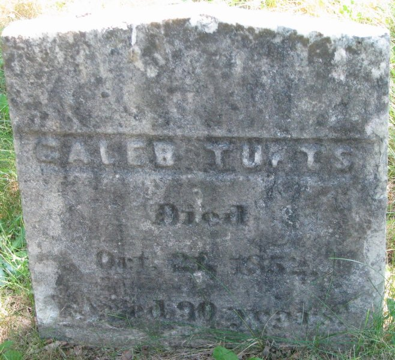

Biography
A Caleb Tufts credited to Medford enlisted in December 1776 to guard stores at and about Boston, and served again in a company of guards in 1779. Wild's Medford list includes a Caleb Tufts born in 1762 who later settled in Mystic, Connecticut.
Service Record
Town: Medford; later Mystic, Conn. · Dates: 1762 – 1852
“TUFTS, CALEB. Private, Capt. Caleb Brooks's co., Col. Dike's regt.; muster roll for Dec., 1776–Feb., 1777; credited to town of Medford; enlisted Dec. 14, 1776; service guarding stores at and about Boston; regiment raised to serve until March 1, 1777; also, Capt. Nathan Sergant's co. of guards; entered service Feb. 3, 1779; discharged May 7, 1779; service, 3 mos. 3 days; company raised for service under Maj. Gen. Gates at and about Boston.”
Massachusetts Soldiers and Sailors of the Revolutionary War, vol. XVI (1907), p. 132 · page scan

Family Connection
“TUFTS, CALEB. Served 3 mos., 1776. Taxed in Medford, 1785; son of Samuel and Hannah (Tufts); born Sept. 5, 1762; married, 1787, Rebecca Burrows; settled in Mystic, Conn.; died in Mystic, 1852; occupation, brick-layer and farmer.”
Helen Tilden Wild, Medford in the Revolution (1903), p. 50 · page scan

Relatives with profiles on this site: father Samuel Tufts (1732–1818); uncle Capt. Joseph Tufts Jr.. Brooks, p. 546, lists “94 Caleb, b. Sept. 1, 1762” among Samuel and Hannah’s children.
Spouse(s)
- Rebecca Burrows (1764–1819). Married 1787 (Wild, p. 50, quoted in Family Connection). Place not stated.
From Tufts Kinsmen
Vol. II records the family of Ezekiel6 and Ann C. (Williams) Tufts (Vol. I ref. 111-1), “from Caleb5, Samuel4, Joseph3, Jonathan2, Peter1.” Their children were born in Groton, New London County, Connecticut, near Mystic. (Tufts Kinsmen, Vol. II, p. 115)
Identity match: strong for Wild’s Caleb (son of Samuel; settled in Mystic, Conn.). It is still only a possible match for the MSS Caleb credited to Medford.
Vol. I
Caleb Tufts, bricklayer and farmer, family no. 44-4: born 1 Sep. 1762 in Medford; died 21 Oct. 1852 in Mystic, Conn.; private in the Revolution, serving three months in 1776; in Southampton, Long Island, N.Y., in 1790; buried in the Old Packer Burying Ground, Mystic. (Tufts Kinsmen, Vol. I, p. 166, family no. 44-4)
| Source | Says |
|---|---|
| Helen Tilden Wild, Medford in the Revolution (1903), p. 50 | “born Sept. 5, 1762” |
| Tufts Kinsmen, Vol. I, p. 166 | born 1 Sep. 1762, Medford |
Identity match: clean to Wild’s Caleb (Medford, 1762, three months’ service in 1776, bricklayer and farmer, died Mystic 1852). His brothers Samuel 3rd (44-3) and the parents’ household are consistent with Wild’s “son of Samuel and Hannah (Tufts)”. The MSS Caleb (Capt. Caleb Brooks’s co., Dec. 1776) remains a possible match only.
Authoritative IDs / Index Numbers
| Source | ID / status |
|---|---|
| Perseus person index (auth=) | Checked, not found (no auth=tufts,… key for this name in Brooks, the Medford Historical Register or Historic Leaves). |
| Find a Grave memorial | 94066507 (dates and family checked) |
| Brooks, History of Medford (1855) register no. | No. 94, p. 546 |
| Mass. Soldiers and Sailors | vol. XVI, p. 132 |
| DAR ancestor no. | Note: Pending further work. |
| FamilySearch ID | Note: Pending further work. |
| Geni profile | Note: Pending further work. |
| WikiTree ID | Note: Pending further work. |
| Town / vital records | Brooks’s register (above) is drawn from Medford town and church records; printed VR volume and page not yet checked |
Only IDs confirmed against dates and family are given as matches. “Not yet checked” means the source has not been searched; “Checked, not found” means it was searched without a match.
⚑ Unverified
That the MSS Caleb (Dec. 1776, Capt. Caleb Brooks's co.) is this man.
Pictures


Find a Grave
Find a Grave memorial 94066507. As given there (secondary; not checked against original records): Born 1 Sep 1762, Medford; died Oct 1852, aged 90, Mystic, Conn. Buried Packer Cemetery, West Mystic. Wife Rebecca (Burrows) Tufts (1764–1819); children Ezekiel (1790–1819), Rebecca Burrows Tufts Reed (1799–1893), Hannah Tufts Paillor (1802–1882).
⚑ Unverified: Find a Grave conflict
Day of death. The gravestone reads Oct 22, 1852; the Find a Grave memorial gives Oct 21, 1852. Not resolved.


Links and Resources
Every source, record, map, survey, marker and artifact tied to this person, gathered in one place. Page numbers are given where a book is cited.
Maps, Surveys and Artifacts
- Massachusetts Soldiers and Sailors of the Revolutionary War, vol. XVI (1907), p. 132 · page scan
- Helen Tilden Wild, Medford in the Revolution (1903), p. 50 · page scan
- — Gen. Horatio Gates (Gilbert Stuart). Portrait of Horatio Gates by Gilbert Stuart, about 1793–94, Metropolitan Museum of Art. Image: Gilbert Stuart (Metropolitan Museum of Art). CC0. Source: Wikimedia
- Source: Wikimedia Commons — Gen. Horatio Gates (Gilbert Stuart). Portrait of Horatio Gates by Gilbert Stuart, about 1793–94, Metropolitan Museum of Art.Image: Gilbert Stuart (Metropolitan Museum of Art). CC0.
- — Gravestone of Caleb Tufts, Packer Cemetery, West Mystic, Conn.. The stone reads “Caleb Tufts Died Oct 22 1852 Aged 90 years.” Photo: Joanna Case, Find a Grave
Graves and Memorials
- Find a Grave memorial · 94066507